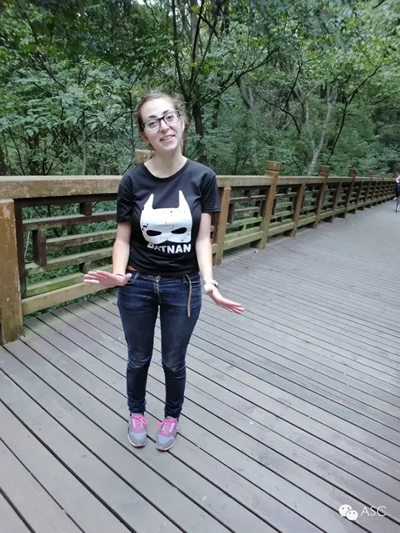
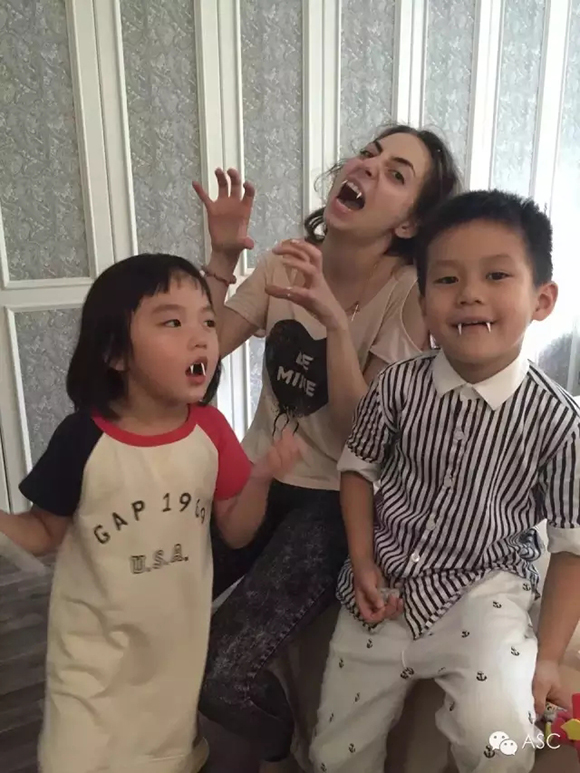
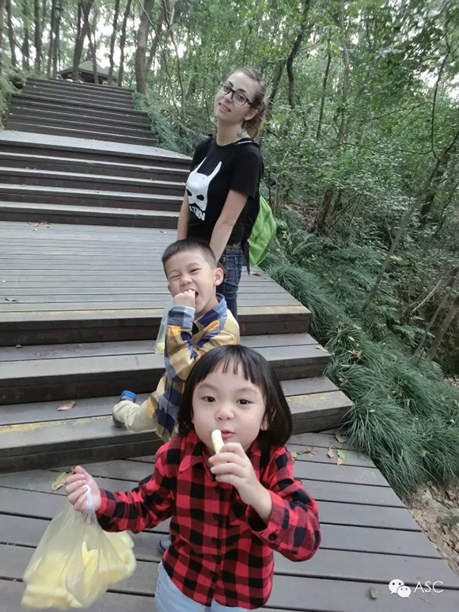

互惠动态
|
|
【互惠生日记】——奥菲
提示：点击上方"ASC"↑免费订阅本刊
前言
对于互惠生，很多家庭把她们误解为“寄宿生”或是“洋家教”。但事实上，接待过互惠生的家庭都知道，这完全是不同的概念，互惠生对家庭有责任的真心的付出，为家庭带来的远不止这些：孩子英语口语的自然使用、孩子更加懂事更擅于思考、家长思想更为开阔更愿意沟通、家庭氛围变得丰富多彩 … … 互惠生都要尽一切努力去融入一个不同文化的陌生家庭。或许下面这篇来自互惠生的肺腑之言可以让我们更进一步的走进互惠生的内心世界，感受到她们的真诚与守望。
互惠生奥菲来自俄罗斯，24岁，毕业于心理学专业。在南京的互惠家庭做互惠生6个月。这是她在入住后2个月时写给互惠家庭妈妈的一封信。
对于在中国做AUPAIR的想法和感受
我在两个月前来到中国，但感觉像来了半年。尤其是第一个月，我感觉度日如年，或许是因为信息量太大、要改变得太多吧。
当我跟我的父母和朋友说我要到中国的时候，他们都认为我疯了：
1、我的互惠周期是6个月。俄罗斯人（至少我们那里的人）对中国的生活状态几乎一无所知。我猜到我的父母一定不同意让我到中国来，所以我买了机票后才告诉他们（在我来了以后，我跟他们提起各种各样在中国遇到的有趣的事情：这里的人、这里的生活、我的生活。从那以后，我的父母便不再担心了）。
2、我会和孩子生活在一起，所有人都认为我不可能做到。
我的第一感觉：
航程的疲惫＋没人讲英语＋完全陌生的环境＋沟通困难＝到中国的第一感觉没那么好，但之后我的观点发生的改变。
在开始新生活后，我遇到的最麻烦的事
1） 调整期：在我来中国前，我已经远离父母独自生活了很久，因此我是个非常独立的人也很自由。在这里我的情况发生了根本的改变：没有了自由、生活无法自主、要适应新规矩。当然，我很清楚这就是AUPAIR生活的一部分，我也准备好了去迎接这样的挑战，但很明显真正做到需要时间去适应。我想这也是所有AUPAIR都会遇到的最大的问题――适应。
2） 价值感：一开始我感觉自己“很没用”。当我第一次站在孩子们面前而他们完全不讲英语的时候，我傻了。我超级担心他们会永远都不跟我讲英文了。我抱着一腔热情来到家庭希望为他们和孩子尽可能多做些事情，而当时真害怕自己无用武之地。
3） 角色定位：在最初的2-3周里，我几乎感觉不到自己是个“大姐姐”。无论如何AUPAIR是一份“工作”，因此从内心讲，和自己的“老板”生活在一起就意味着“生活即是工作”，你在精神上没得休息。

面对这些麻烦事，我的解决方案：
1、求反馈：最初的2-3周十分困难，那是我在中国度过的最痛苦的时光。我很怕犯错因为我希望自己可以达到家庭的期待值，但又同时不是很确定家庭的期待值到底是什么、有哪些。我总是这样安慰自己：如果我的家庭不喜欢我做的某些事，他们一定会告诉我。因此对我来说，家庭对我工作的反馈（不论好坏）我都会十分珍惜，直到现在也是如此。
2、懂孩子：此外，和小孩子做朋友不是一件简单的事，因为在一开始他们无法听懂我说的话，向他们解释“我想做什么”和“为什么我这样做”是件非常困难的事，反之亦然，我也听不懂他们讲的。每个小孩子都有自己的小世界，而且每个小世界都各有不同，因此需要我煅练出非常灵活的思维方式去让每个我照顾的孩子都接受我。
3、自我改变：从前我经常搬家，换工作换房子，因此我知道做出这些改变有多困难，但这次转变是我经历过最困难的一次――我根据家庭的规矩改变自己的所有习惯、让自己的生活方式来了个360度大变化。虽然痛苦，但我知道这样的转变必定值得。
经过调整，我现在的工作（生活）状态成为这样：
1） 开心。我喜欢我的家庭，也爱他们的孩子们；
2） 我成为了孩子们的“大姐姐”；
3） 孩子们的英语有了很大进步，让我感到十分自豪――自己的辛苦付出终得回报；
4） 休息时我既身心俱疲也充实快乐――虽然我十分爱孩子们，但长时间付出真情的陪伴也是相当费神的事情。所以我会充分利用休息时间好好放松充电以便为新的一周的工作做准备。啊，忘了说，我每周从周五工作到周三，周四是我的休息日。
5） 我不敢说自己适应了中国的所有事物，但我已经开始适应在中国的生活。
6） 有时我还是不知道自己做的是对的还是错的。我看到我们文化的不同之处，因为西方文化在我的骨子里根深蒂固，所以我总感觉自己有些事是做错的，但又说不清哪里错——我默认自己一定会做错事情——所以我还是很需要我的家庭或中国朋友告诉我，我有没有哪里是做错的。

是什么帮助了你适应中国生活？
首先，是我的家庭妈妈。她太完美了。她是一个美丽的、聪慧的、开明的妈妈。我觉得我是如此的幸运能够做她们家的互惠生。她做一切努力让我感觉我像是在我自己家一样。并且我喜欢和她聊天，就像和一个朋友那样。这是一种很棒的感觉，因为她给我讲很多有趣的事情，我也可以与她分享我的故事和一些秘密。我是如此地感谢她。
我的新朋友们。我在这里真的结交了很棒的新朋友。不管我住在哪里，对于我来说，找到可以倾诉，可以一起做开心的事情的朋友，真的非常重要。当我刚到中国的时候，我感觉没有人是讲英语的，所以我感觉很孤单。但后来几乎每一天，我都遇见新的朋友，他们会讲英语，也很愿意和我聊天。最后，我真的找到了很好的朋友，他们使我的生活变得更加美好。每当我和他们在一起聊天的时候，我感觉整个人都是放松的。他们让我忘记了烦恼，忧愁，担心，并且帮助我享受我的中国生活。从情感上来说，整天和孩子在一起是一种复杂的心情。那也是为什么我每周的休息日可以给我能量来应付下一周，也让我感受到了那可爱的自由。
我的家人，闺蜜和男朋友。他们非常支持我，帮助我。尽管我的父母刚开始并不希望我来中国，不管怎样，我到中国后，他们还是一如既往地支持我，给我打电话。我的闺蜜和男朋友知道我的真实想法和感受，他们每天给我写信，鼓舞我，让我感觉更好。我真的非常感谢他们。
我的事业。我在空闲时间有很多事情可以做，那也是为什么我从来不会无聊的原因。比如，我读了3本不同的书，我有一个博客，我要在上面写文章，我还学了法语跟西班牙语，现在学中文。我还帮助我的朋友学习英语，并且做一些练习来提高我自己的中文。我弹钢琴，在我的阿根廷朋友的“阿根廷与中国文化”的项目上给予帮助等等。
我的性格。首先我知道我的互惠家庭花了很多时间，精力和金钱来找到我并邀请我。我很尊重这一点，这也是我为什么要做到最好的原因。第二就是一种责任感。如果我开始做某件事情，我就要完成它。放弃真的太容易了。有的时候我觉得11月份真的太远了，但是我知道，等我完成了这个项目，我一定会为自己感到骄傲的。除了交谈，我更多的可以找到每件事情的积极面，在遇到我不喜欢的事情的时候我总是能保持耐心。
另外很重要的一点就是，就算你不喜欢某些新鲜事物，你要有能力去接受它。事实上，我也不能说我喜欢中国的一切，但我有那个能力去接受并消化这一切。我想互惠生所必须的几点品质大概为：开明，平易近人，负责，善于交谈，积极，适应能力。
总的来说，我喜欢中国。我很高兴有这样一种经验，也很开心可以学到世界上最难学的语言之一。中国帮助我了解了真正的自己。

我喜欢的事
1） 用筷子吃饭；
2） 接触新东西；
3） 学习中国生活方式；
4） 交新朋友；
5） 和我的家庭女主人聊天；
6） 中国食物（尤其是水果和炒菜）；
7） 感受到自己每天都在进步而自己的思想一天比一天开阔。

ASC国际互惠生项目公众号ASCCENTER
互惠生最早起源于英、法、德国等自发的青年活动，是指给来自全世界的青年提供一个寄住在他国家庭里体验文化学习语言的机会，如今我们把国外互惠生请来家庭里，照顾自家的孩子，从小培养外文的语言环境，为孩子出国，全家移民打下优良基础，关注个【公众微信号】ASCCENTER了解更多国外有趣资讯。
ASC国际互惠生客服号ASC-CENTER
24小时客服个人微信号，对接家庭与互惠生之间的问题，对互惠生项目有陌生不熟悉或者想了解更多信息的可以关注【个人微信号】ASC-CENTER与客服详细交流。